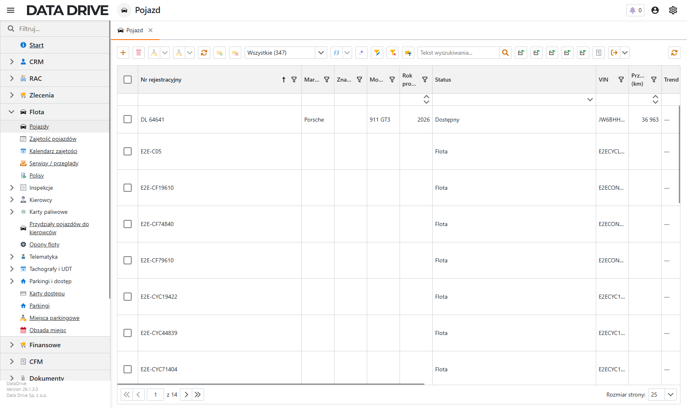
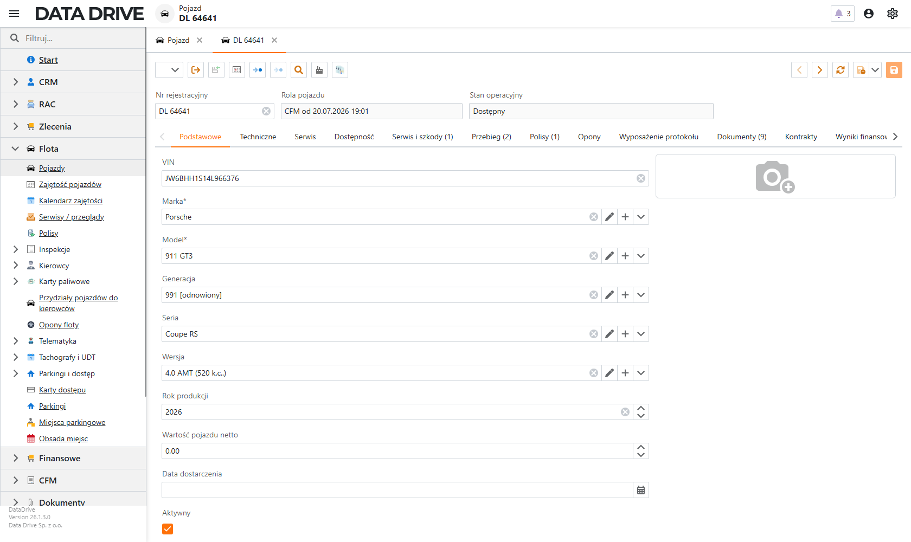
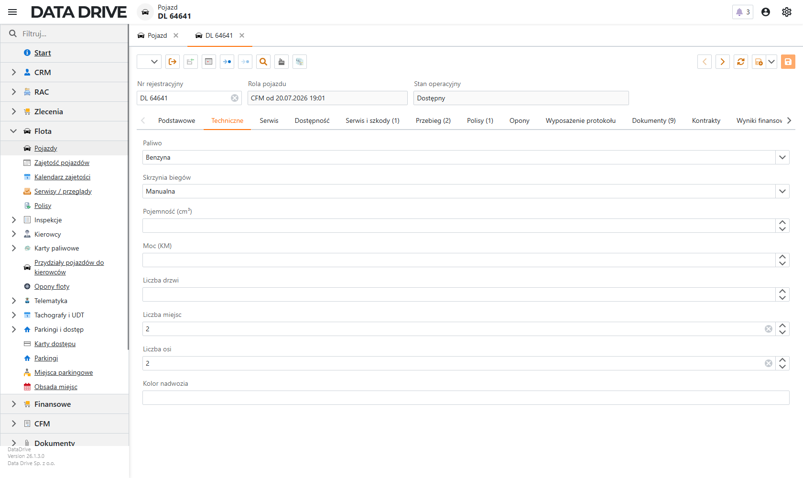
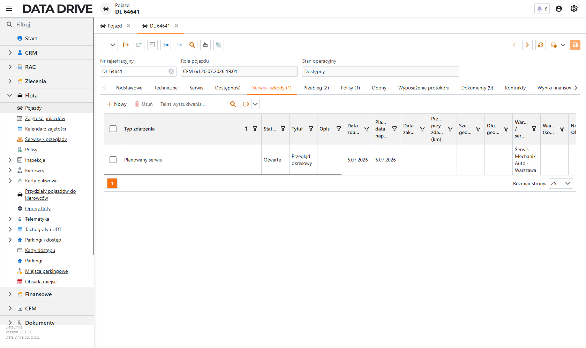
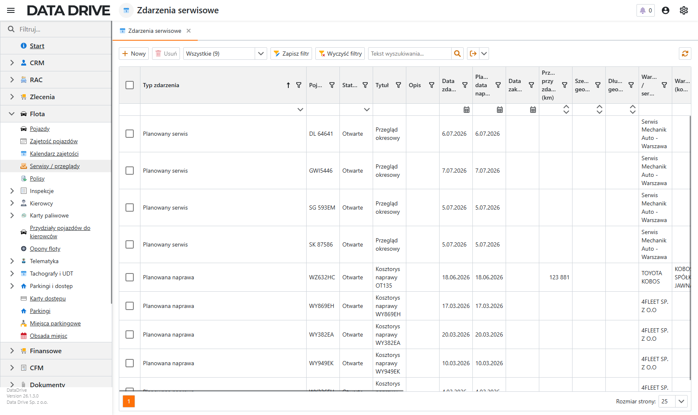
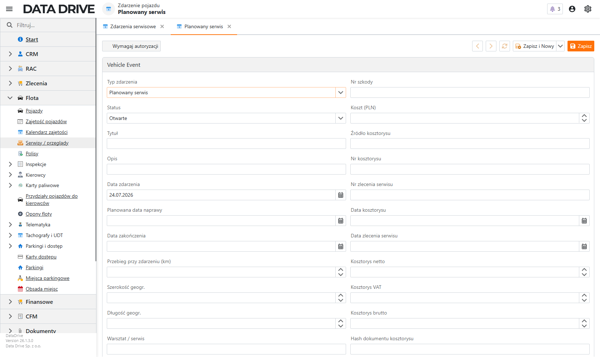

Flota — pojazdy i serwisy
Moduł floty prowadzi kartotekę pojazdów wraz z ich pełną historią eksploatacji. Jeden rekord łączy dane rejestrowe, specyfikację techniczną, przebieg, polisy oraz zdarzenia serwisowe, dzięki czemu w każdej chwili wiesz, czym dysponujesz i co czeka dany samochód. Serwisy, naprawy, awarie i szkody rejestrujesz przy pojeździe albo na wspólnej liście zdarzeń.
O module floty
Flotę otwierasz z lewego menu, w grupie Flota. Znajdziesz tam między innymi Pojazdy (kartoteka), Serwisy / przeglądy (zdarzenia serwisowe), Polisy, Inspekcje i Opony floty. Każdy pojazd ma jedną kartę z zakładkami: dane podstawowe i techniczne, plan serwisowy, dostępność, serwis i szkody, przebieg, polisy oraz opony. Rola pojazdu (Flota, Pool, Wynajem, CFM) i status operacyjny podpowiadają, do czego samochód służy i czy jest dostępny.
Lista pojazdów
Pracę zaczynasz tutaj. Ekran zbiera wszystkie pojazdy floty i pokazuje ich najważniejsze dane w jednej siatce, więc szybko odnajdziesz właściwy samochód po numerze rejestracyjnym, marce albo statusie.

- Nr rejestracyjny
- Tablica pojazdu. Po niej rozpoznajesz samochód na wszystkich listach i dokumentach.
- Marka, Model
- Producent i model. Wybierasz je ze słownika pojazdów.
- Rok produkcji
- Rocznik pojazdu.
- Status
- Stan operacyjny: Dostępny, Flota, Serwis, Wynajem, Zarezerwowany i inne. Mówi, czy pojazd jest wolny i do czego jest przypisany.
- VIN
- Numer nadwozia. Jednoznacznie identyfikuje pojazd.
Pojazd wyszukasz w polu Tekst wyszukiwania nad listą, a kolumny filtrujesz ikoną lejka i sortujesz kliknięciem nagłówka.
Karta pojazdu
Kartę pojazdu otwierasz podwójnym kliknięciem wiersza na liście. Zakładka Podstawowe zbiera dane rejestrowe i identyfikacyjne. Na górze widać numer rejestracyjny, bieżącą rolę pojazdu i stan operacyjny, które aplikacja wylicza na podstawie przydziałów i zdarzeń.

Aby dodać nowy pojazd, wykonaj następujące kroki:
- Na liście pojazdów kliknij Nowy na górnym pasku.
- Wpisz Nr rejestracyjny — to pole jest wymagane.
- Wybierz Markę i Model ze słownika. Opcjonalnie uzupełnij Generację, Serię i Wersję.
- Podaj VIN, Rok produkcji i Wartość pojazdu netto.
- Zapisz kartę skrótem Ctrl+Shift+S albo przyciskiem Zapisz.
Pojazd pojawi się na liście, a jego stan operacyjny ustawi się na Dostępny, dopóki nie przypiszesz go do floty, poolu ani wynajmu.
- Nr rejestracyjny
- Tablica pojazdu. Pole wymagane.
- Marka, Model
- Producent i model ze słownika. Oba wymagane.
- VIN
- 17-znakowy numer nadwozia.
- Rok produkcji
- Rocznik pojazdu.
- Wartość pojazdu netto
- Wartość początkowa netto, podstawa dla rozliczeń i amortyzacji.
- Rola pojazdu
- Bieżące przeznaczenie: Flota, Pool, Wynajem albo CFM. Aplikacja wylicza je z aktywnego przydziału.
- Stan operacyjny
- Wyliczany status pojazdu, na przykład Dostępny, Serwis albo Wynajem.
Dane techniczne
Zakładka Techniczne opisuje parametry pojazdu, które przydają się przy serwisie, tankowaniu i doborze opon. Wypełnij te pola, które faktycznie potrzebujesz w rozliczeniach i raportach.

- Paliwo
- Rodzaj zasilania: Benzyna, Olej napędowy, LPG, Hybryda, Elektryczny albo Ogniwo wodorowe.
- Skrzynia biegów
- Manualna, Automatyczna albo Półautomatyczna.
- Pojemność (cm³), Moc (KM)
- Parametry silnika.
- Klasa / segment, Sylwetka
- Klasyfikacja pojazdu i typ nadwozia (Sedan, SUV, Van, Ciężarowy i inne).
- Kolor nadwozia
- Kolor lakieru pojazdu.
Serwis i szkody na karcie pojazdu
Zakładka Serwis i szkody pokazuje wszystkie zdarzenia serwisowe danego pojazdu w jednym miejscu — przeglądy, naprawy, awarie i szkody. Dzięki temu z poziomu karty widzisz pełną historię eksploatacji i dopisujesz nowe zdarzenie bez opuszczania samochodu.

Aby dopisać zdarzenie serwisowe przy pojeździe, wykonaj następujące kroki:
- Na karcie pojazdu przejdź do zakładki Serwis i szkody.
- Na pasku siatki kliknij Nowy.
- Wypełnij okno zdarzenia i zapisz — pojazd podstawi się automatycznie.
Zdarzenie pojawi się na liście zakładki oraz na wspólnym ekranie Serwisy / przeglądy.
Serwisy i przeglądy
Wszystkie zdarzenia serwisowe całej floty zbiera ekran Serwisy / przeglądy w grupie Flota. To wygodne miejsce, gdy planujesz przeglądy albo szukasz otwartych napraw niezależnie od pojazdu. Każdy wiersz wskazuje pojazd, typ zdarzenia, status i warsztat.

Aby zarejestrować zdarzenie serwisowe, wykonaj następujące kroki:
- W grupie Flota otwórz Serwisy / przeglądy.
- Na górnym pasku kliknij Nowy.
- W polu Typ zdarzenia wybierz Planowany serwis, Planowaną naprawę, Awarię albo Szkodę.
- Wpisz Tytuł zdarzenia — to pole jest wymagane.
- Uzupełnij Datę zdarzenia, Przebieg przy zdarzeniu (km), Warsztat / serwis oraz Koszt (PLN).
- Ustaw Status na Otwarte, a po zakończeniu prac zmień go na Rozwiązane i podaj Datę zakończenia.
- Kliknij Zapisz.

- Typ zdarzenia
- Rodzaj zdarzenia: Planowany serwis, Planowana naprawa, Awaria albo Szkoda.
- Status
- Etap obsługi: Otwarte, W trakcie, Rozwiązane albo Anulowane.
- Tytuł
- Krótki opis zdarzenia, na przykład „Przegląd okresowy 30 000 km”. Pole wymagane.
- Data zdarzenia, Data zakończenia
- Kiedy zdarzenie wystąpiło i kiedy je zamknięto.
- Przebieg przy zdarzeniu (km)
- Stan licznika w chwili zdarzenia.
- Warsztat / serwis
- Nazwa warsztatu. Kontrahenta z bazy wskażesz osobno w polu Warsztat (kontrahent).
- Koszt (PLN)
- Koszt zdarzenia. Przy szkodzie podaj też Nr szkody.